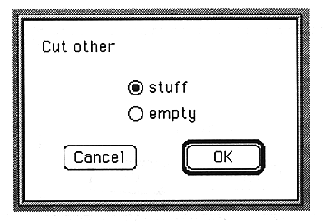

Return to previous page
｜
Return to menu
｜
Go to next page
●Cut other
Cuts the selected area. This content is not stored on the clipboard.

The parameters set in this window are as follows:
stuff
Pack the cut parts after cutting.
empty
The cut part is not filled after cutting.
Copy
Copies the selected range and stores it on the clipboard.
Return to previous page
｜
Return to menu
｜
Go to next page